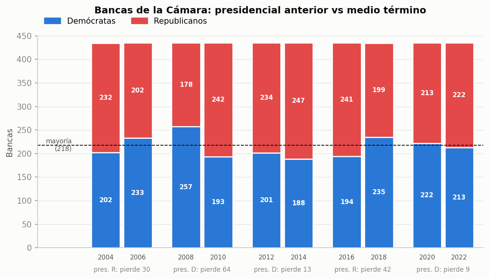
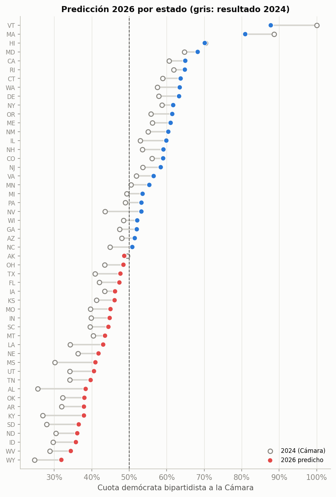

Una predicción de la elección del 3 de noviembre de 2026 hecha solo con los resultados oficiales de las elecciones pasadas.
¿Podemos anticipar el resultado mirando cómo votó cada estado en la elección presidencial de dos años antes?
Usamos los resultados oficiales de los 50 estados en las elecciones de 2004 a 2024.
Un estado vota en el medio término parecido a como votó en la elección presidencial de dos años antes.
El partido del presidente pierde votos en el medio término, sea demócrata o republicano.
Donde el partido del presidente había ganado por mucho, pierde más.
Para comprobarlas comparamos 5 elecciones de medio término (2006, 2010, 2014, 2018 y 2022) con la presidencial anterior a cada una: 250 casos (50 estados × 5 elecciones).

Cada par de barras: bancas después de la presidencial y después del medio término. Azul = demócratas, rojo = republicanos.
Los estados votan casi igual que dos años antes, y cada vez más.
El partido del presidente perdió bancas las 5 veces: unos 5 puntos de votos en un estado parejo.
Donde había ganado por mucho, su ventaja se achicó más.
Cómo votó cada estado en la última elección presidencial (2024).
Le resta al partido del presidente lo que suele perder en un medio término.
Obtiene el porcentaje de votos de cada partido en los 50 estados.
Convierte el total de votos en bancas según lo que pasó en las últimas 11 elecciones.
Lo pusimos a prueba con el pasado: le "tapamos" una elección, lo entrenamos con las otras cuatro y le pedimos que la adivinara. Repetimos con cada una.
Simulamos 10.000 elecciones con los errores que tuvo el modelo en el pasado. En la mayoría los demócratas superan las 218 bancas, pero en 12 de cada 100 no llegan.
¿Qué es el 54 %? Solo contamos los votos a demócratas y republicanos de todo el país: D ÷ (D + R). El resto hasta el 100 % es republicano (54 % D = 46 % R), así que más del 50 % = más votos demócratas.

Círculo gris = 2024. Punto de color = predicción 2026 (azul si pasa el 50 %).
| Estado | Bancas | 2024 | 2026 |
|---|---|---|---|
| Michigan | 13 | 49,4 % | 53,6 % |
| Pensilvania | 17 | 49,0 % | 53,3 % |
| Nevada | 4 | 43,5 % | 53,3 % |
| Wisconsin | 8 | 48,5 % | 52,1 % |
| Georgia | 14 | 47,4 % | 52,0 % |
| Arizona | 9 | 48,0 % | 51,5 % |
| Carolina del Norte | 14 | 44,8 % | 50,8 % |
¿Qué es el porcentaje? Solo contamos los votos a demócratas y republicanos: D ÷ (D + R). El resto hasta el 100 % es republicano (53,6 % D = 46,4 % R), así que más del 50 % = más votos demócratas.